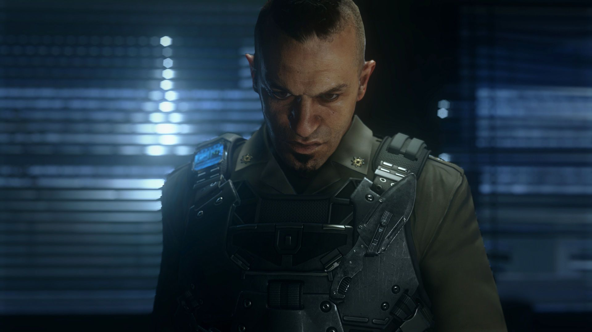

Attack on Hades
Mitchell and Ilona locate Hades, and Mitchell shoots him using a WASP drone, but it is revealed to be a double. The double is rigged with explosives that go off after his death and almost wipes out the squad if not for a sacrifice made by an Atlas operative. The compound is soon swarmed by other KVA operatives and the remaining Atlas forces must fight their way out. The real Hades makes an attempt to escape, but Mitchell and Ilona stop him and, after a brief struggle, Mitchell cuts Hades' throat. As he is dying, Hades utters the words "Irons knows" and gives Mitchell and Ilona a storage device containing a recording.
To be continued... Back to welcome screen